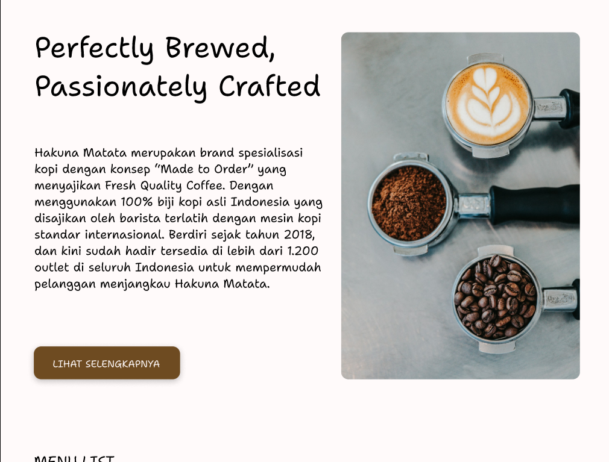
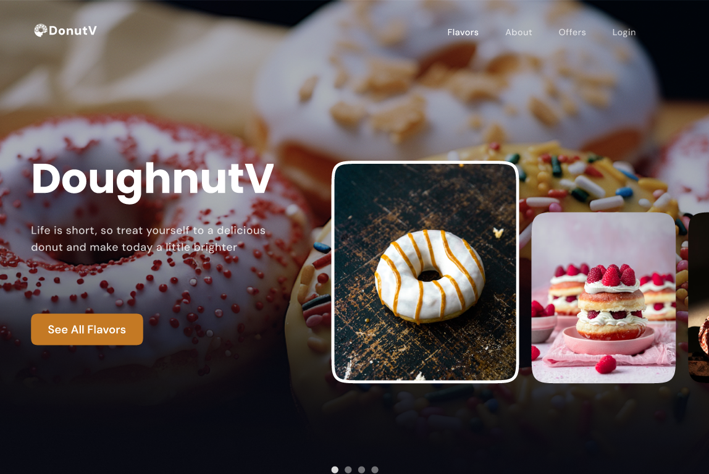
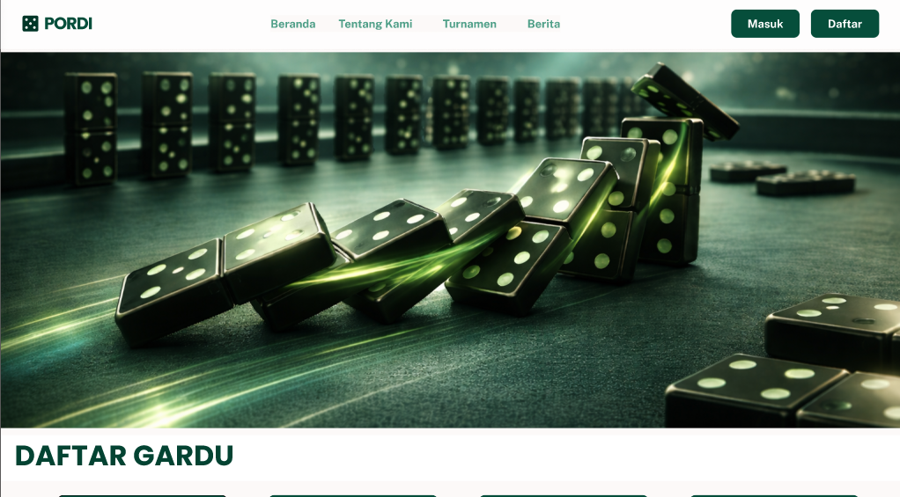
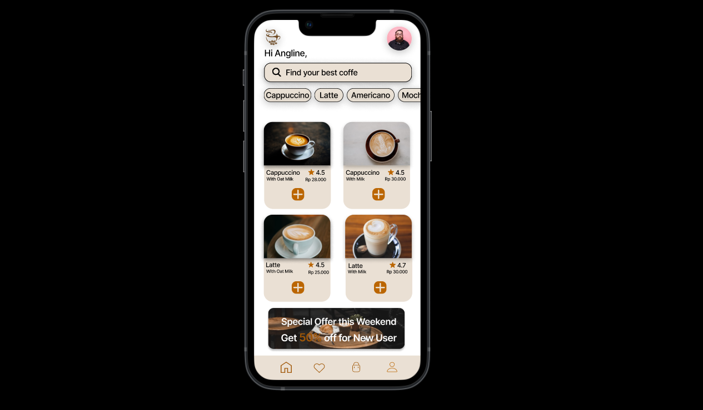
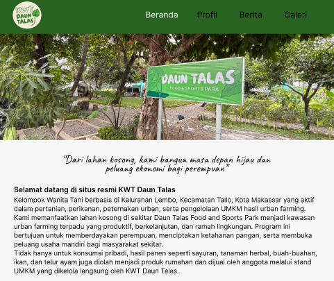
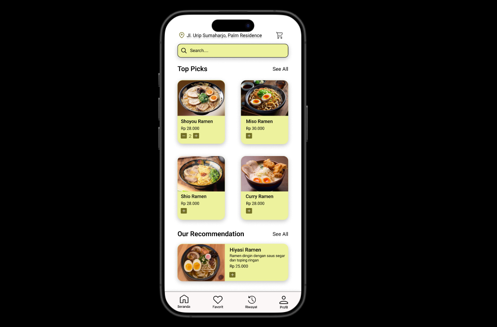

I design modern, clean, and user-friendly interfaces using Figma.
View ProjectsPerkenalkan, saya adalah seorang UI/UX Designer yang memiliki ketertarikan dalam desain antarmuka yang modern, sederhana, dan mudah digunakan. Saya berfokus pada pembuatan desain yang tidak hanya menarik secara visual, tetapi juga memberikan pengalaman pengguna yang nyaman.
Saya merupakan lulusan dari Universitas Dipa Makassar dengan jurusan Sistem Informasi. Selama masa studi, saya mempelajari berbagai hal terkait teknologi informasi, desain antarmuka, dan pengembangan sistem.
Saat ini saya terus mengembangkan keterampilan saya di bidang UI/UX Design, khususnya menggunakan Figma, serta memperdalam pemahaman tentang user experience dan user interface design.
Figma
UI Design
UX Research
Frontend

Proyek desain UI/UX yang dibuat pada kegiatan Kuliah Kerja Lapangan (KKL). Proyek ini berfokus pada perancangan antarmuka aplikasi mobile yang modern, sederhana, dan mudah digunakan dengan menggunakan Figma. Desain dibuat dengan memperhatikan pengalaman pengguna, alur navigasi, dan keteraturan visual
View Project
Landing page ini dirancang sebagai project UI/UX menggunakan Figma dengan pendekatan modern dan minimalis. Fokus utama desain adalah menciptakan pengalaman pengguna yang intuitif melalui tata letak yang bersih, tipografi yang jelas, serta struktur informasi yang mudah dipahami. Project ini merepresentasikan eksplorasi desain landing page untuk kebutuhan branding dan digital presentation.
View Project
Proyek ini merupakan desain landing page untuk Gardu Domino yang dibuat menggunakan Figma. Desain ini berfokus pada tampilan yang modern, dinamis, dan menarik untuk memperkenalkan brand serta layanan yang ditawarkan. Selain itu, desain ini juga dirancang untuk memberikan pengalaman pengguna yang mudah, jelas, dan interaktif dalam mengakses informasi.
View Project
Desain UI mobile aplikasi pemesanan kopi yang dibuat menggunakan Figma dengan fokus pada tampilan modern, navigasi yang mudah, dan pengalaman pengguna yang nyaman.
View Project
Desain landing page KWT Daun Talas yang dibuat menggunakan Figma dengan fokus pada branding digital, penyampaian informasi yang jelas, serta pengalaman pengguna yang modern dan mudah diakses.
View Project
Desain UI mobile aplikasi pemesanan ramen yang dibuat sebagai project tugas kuliah menggunakan Figma dengan fokus pada tampilan modern dan kemudahan penggunaan.
View ProjectFeel free to reach out via email or Instagram